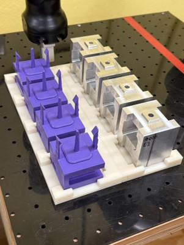
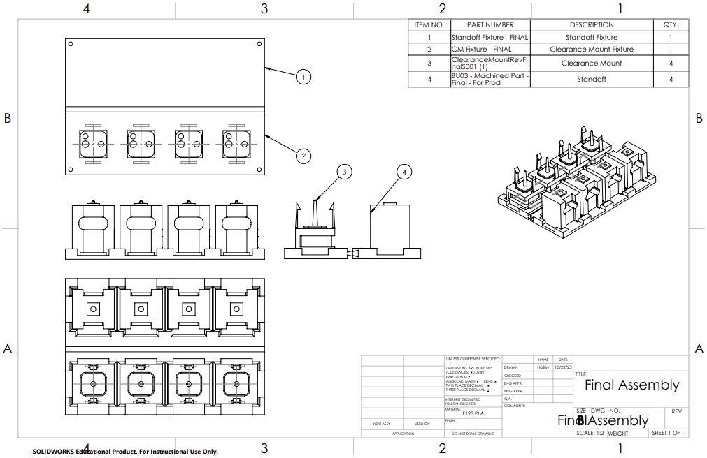
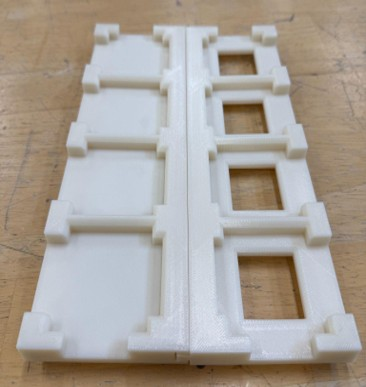

Category: Manufacturing / Robotics / Fixture Design
Fixture for UR5e Automated Sub-Assembly
This project involved designing and fabricating a custom fixture for a UR5e collaborative robot used in an automated sub-assembly process. The fixture ensured accurate, repeatable part positioning and reduced setup variation; I served as team lead, coordinating design decisions and fabrication.
Gallery

Fixture in the System
This shows the fixture mounted in the UR5e pegboard, with components ready for robotic sub-assembly.

Final Design Drawing
Final CAD drawing of the fixture showing dimensions and mounting features.

Final Fixture
Completed production fixture ready for installation onto the pegboard.
Overview
- Goal: Create a rigid, repeatable fixture for UR5e automated sub-assembly.
- Constraints: Robot clearance, collision avoidance, quick loading/unloading, stable part constraint.
- My role: Team lead — design reviews, fabrication, assembly, and cross-team communication.
- Approach: Requirements → CAD → redesign → prototype → robot testing → final manufacturing.
What I Learned
- Fundamentals of fixture and jig design, including the 3-2-1 principle.
- Designing for manufacturability and robot accessibility under time constraints.
Tools & Skills
SolidWorks
Fixture Design
DFMA
Prototyping
Testing
Team Leadership
3D Printing
Results
- Enabled repeatable part positioning and reduced cycle-to-cycle variability.
- Improved workflow while maintaining stable constraints and safe robot access.